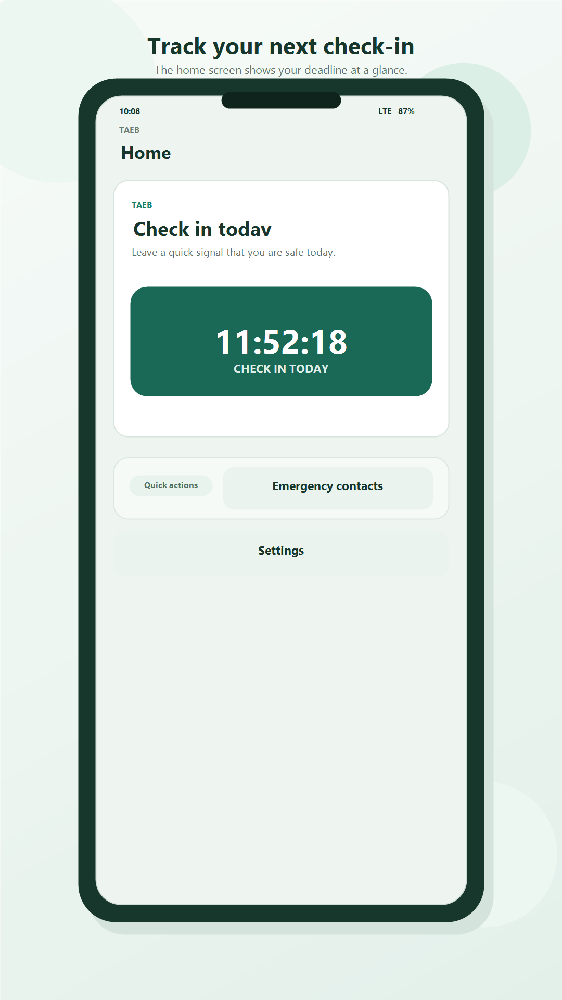
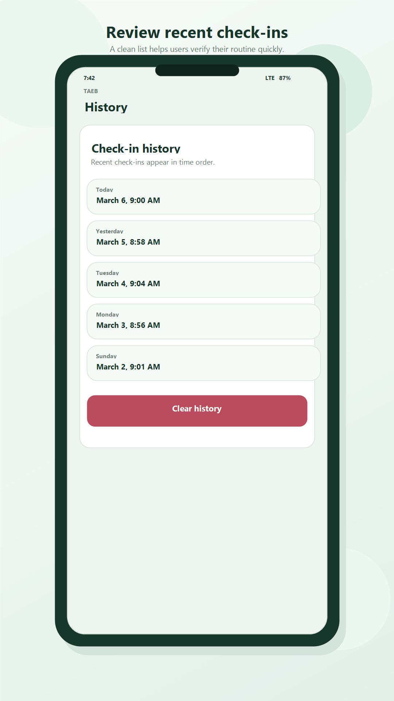
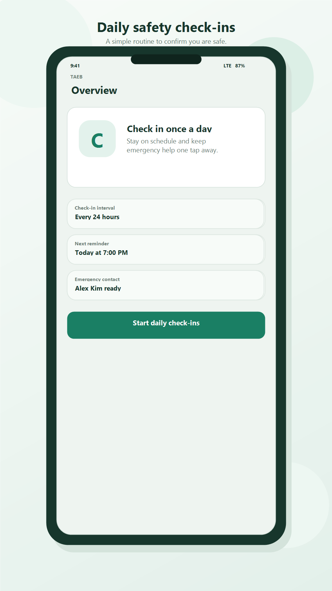
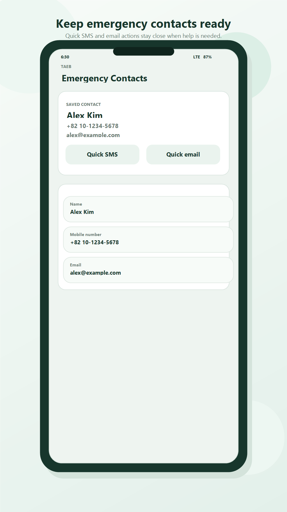

루틴 유지
체크인과 카운트다운으로 안부 확인 습관을 자연스럽게 유지합니다.
DAILY SAFETY CHECK-IN
check는 매일 안부 체크를 간단하게 기록하고, 미체크인 상황에서 저장된 긴급 연락처로 문자 또는 이메일 동작까지 빠르게 연결해주는 안전 체크인 앱입니다.


Next Check-In
23:58:11ABOUT
check는 사용자에게 부담 없는 루틴을 제공합니다. 하루 한 번 체크인하고, 다음 마감까지 남은 시간을 확인하고, 놓쳤다면 바로 긴급 연락 동작으로 이어집니다.
WHY CHECK
체크인과 카운트다운으로 안부 확인 습관을 자연스럽게 유지합니다.
미체크인 경고 후 긴급 연락처 문자/이메일 실행까지 바로 이어집니다.
계정 가입 없이 바로 시작할 수 있어 누구나 쉽게 사용할 수 있습니다.
FEATURES
한 번의 탭으로 현재 안부를 기록합니다.
다음 체크인 마감까지 남은 시간을 확인합니다.
체크인 기록을 확인하고 필요 시 초기화합니다.
추가, 수정, 삭제를 간편하게 처리합니다.
위기 순간 대응 동작으로 즉시 이동합니다.
알림 On/Off와 한국어/영어 전환을 지원합니다.
SCREEN PREVIEW

